Methodology
A python script for binning and interpolating a DEM and DSM for lidar data and computing topographic analyses. It computes the density of the lidar point cloud (Fig.1) and the ground class (Fig.2). Then it bins the digital surface model (Fig.3), the digital elevation model (Fig.4), and the last returns (Fig.5). Next it computes a map of lidar classes using map algebra (Fig.6). Then it interpolates the DEM (Fig.7) and DSM using v.surf.rst and computes slope, aspect, skyview factor, and principle component analysis for each. The skyview factor map for the DSM is quite beautiful with the long shadows cast by trees over the fields.
Script
lidar_analytics.py
Point cloud density
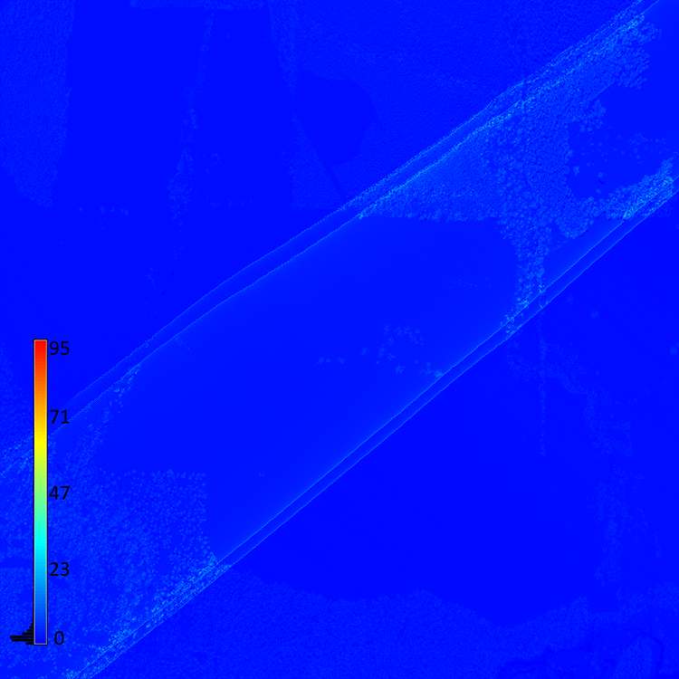
Ground density
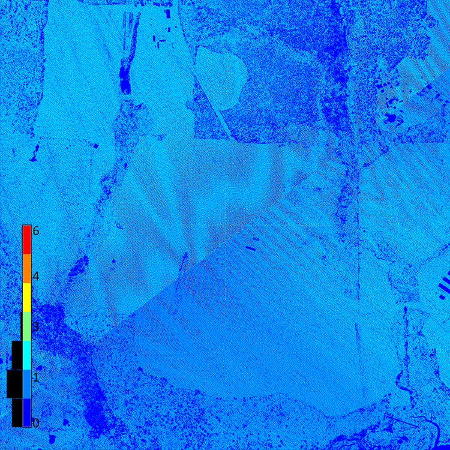
Binned digital surface model
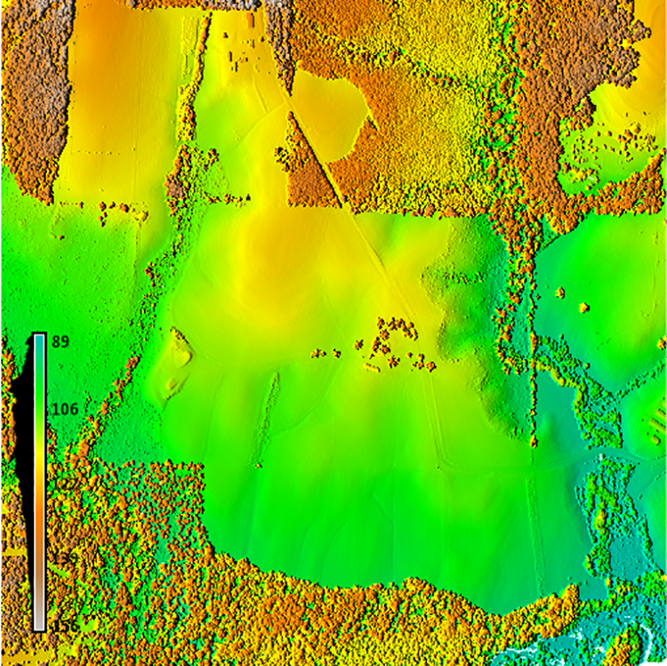
Binned digital elevation model
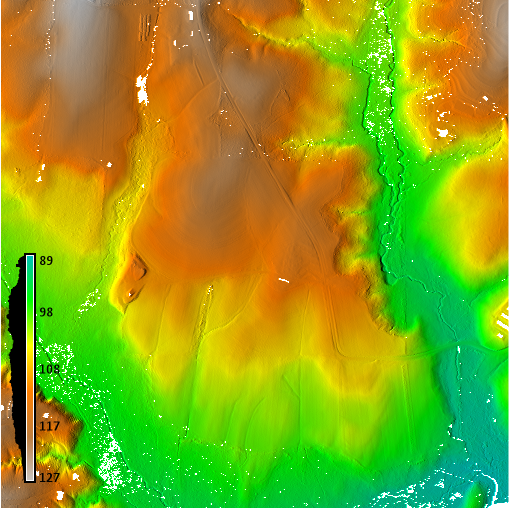
Binned last returns
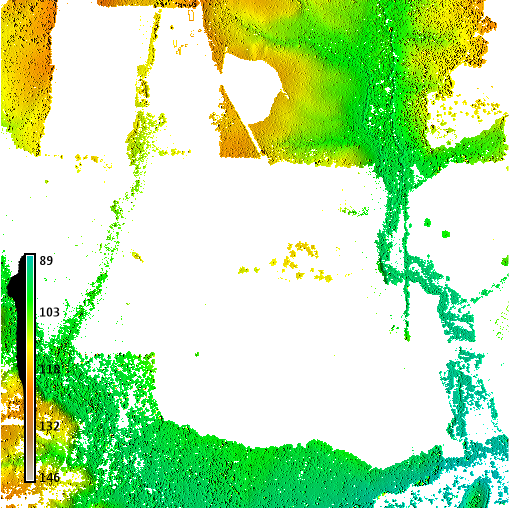
Lidar classes
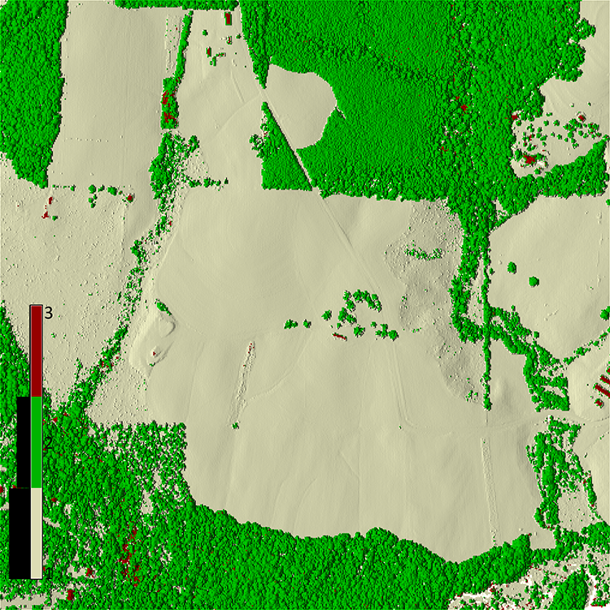
Interpolated digital surface model
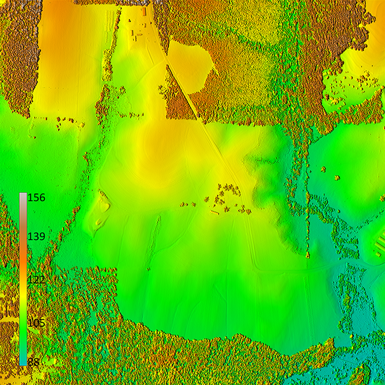
Interpolated digital elevation model
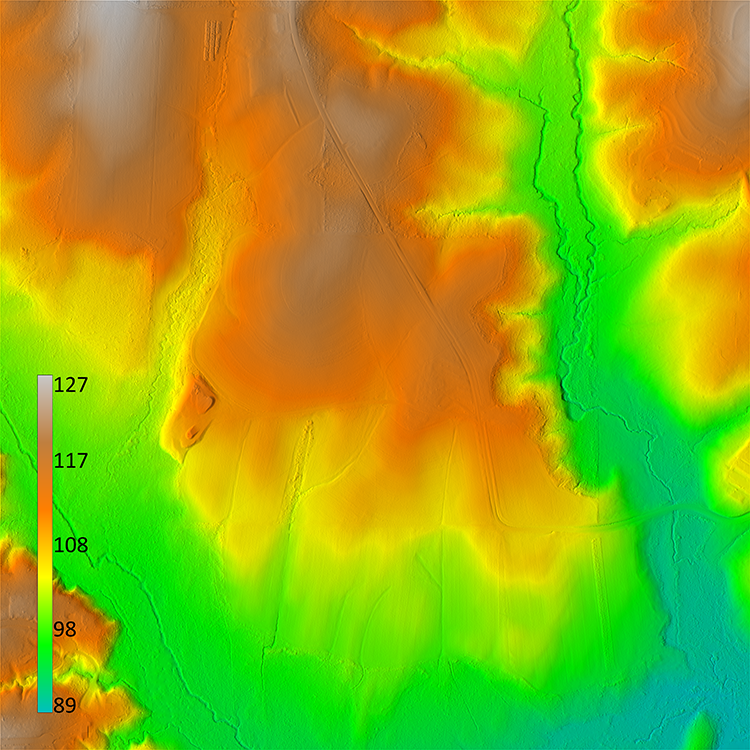
DSM slope
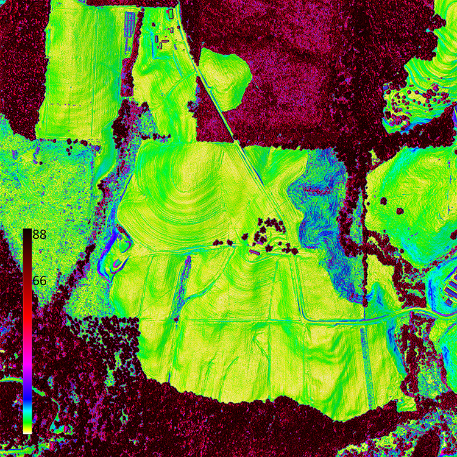
DEM slope
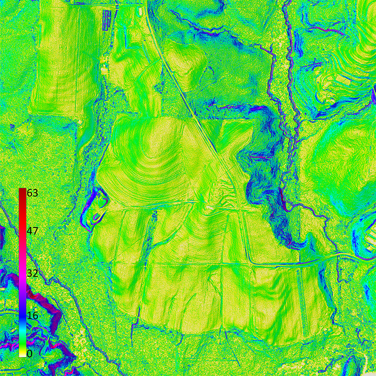
DSM aspect
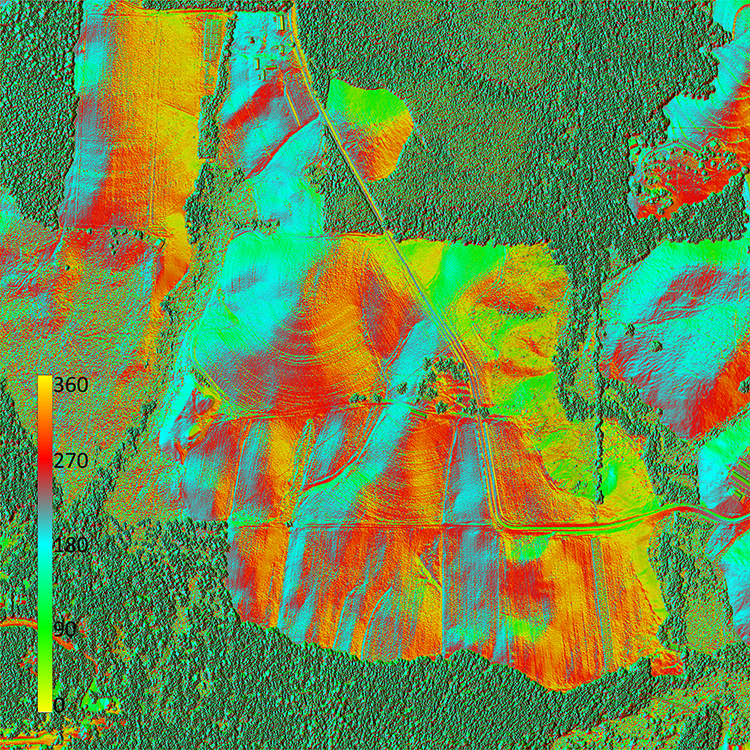
DEM aspect
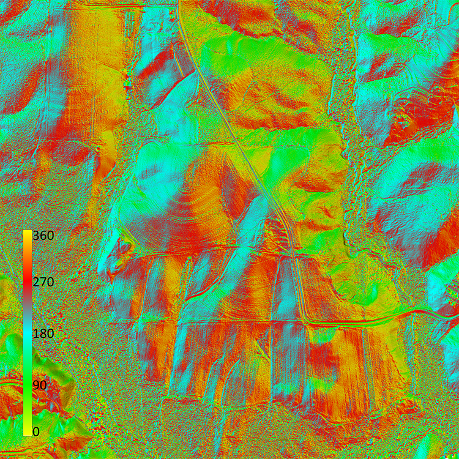
DSM skyview
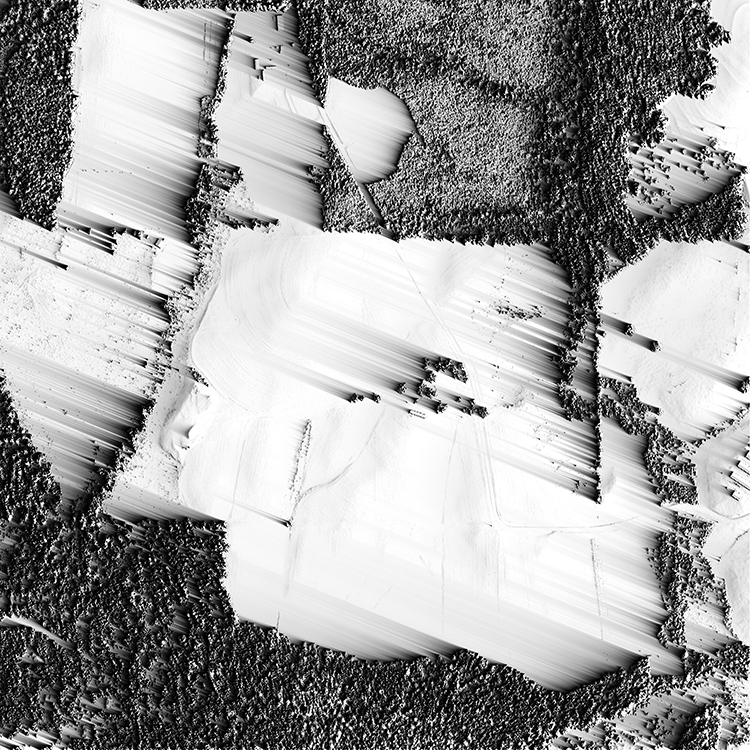
DEM skyview
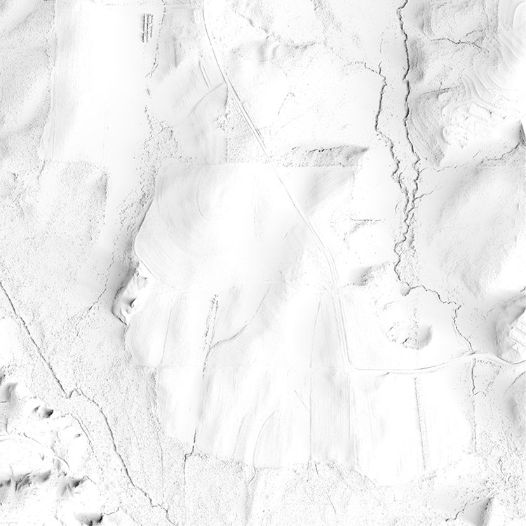
DSM principle component analysis

DEM principle component analysis
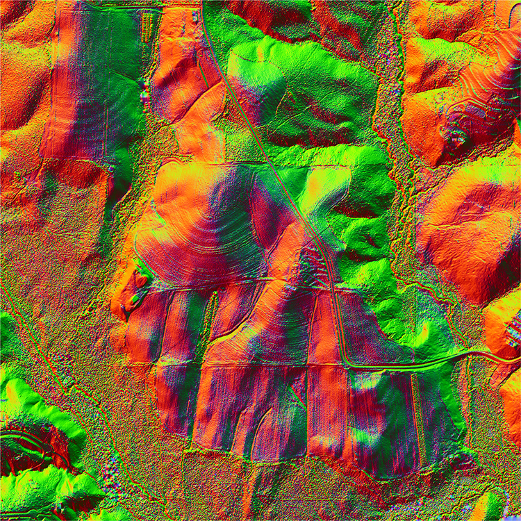